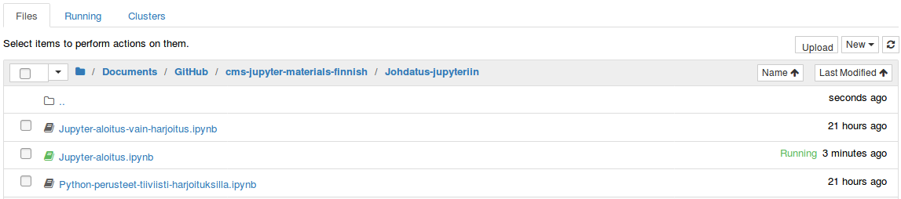
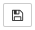
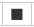
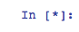
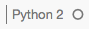
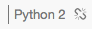
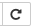

Jupyter Notebook -tutoriaali¶
Tervetuloa käyttämään Jupyter Notebookia!
Tähän tutoriaaliin on koottu suomeksi oleellisimmat perustiedot Jupyter Notebookin käytöstä ja ominaisuuksista. Jos olet avannut tutoriaalin Jupyterissa, voit vapaasti kokeilla erilaisia toimintoja, muokata sisältöä ja luoda omia kommenttejasi. Mikäli sinulla ei vielä ole Jupyteria, katso osio Jupyter Notebookin asennus.
Yksityiskohtaisempia ohjeita varten Jupyter-projektin virallinen englanninkielinen dokumentaatio löytyy osoitteesta http://jupyter.readthedocs.io/en/latest/index.html. Jupyter Notebook -sovellukseen keskittyvä dokumentaatio on saatavilla osoitteessa http://jupyter-notebook.readthedocs.io/en/latest/.
Tämä dokumentti sisältää:
(valitettavasti linkit toimivat vain Jupyterissa, eivät GitHubissa)
Solut
5.1 Solun luominen ja muokkaaminen
5.2 Solun ajaminen
5.3 Tekstisolu (Markdown)
5.4 Otsikkosolu (Heading)
5.5 Koodisolu (code)Kuvien ja videoiden lisääminen notebookiin
6.1 Kuvan lisääminen
6.2 Kuvan muotoilu
6.3 Videon lisääminenNotebookien käyttäminen
9.1 Mahdollisia ongelmatilanteita ja ratkaisuja niihin
1. Mikä Jupyter Notebook?¶
Jupyter Notebook on verkkosovellus, jonka avulla voidaan luoda ohjelmointikoodia, tavallista tekstiä, kuvia, visuaalisointeja ja yhtälöitä yhdistäviä dokumentteja. Näitä dokumentteja kutsutaan notebookeiksi.
Jupyter on toteutettu avoimella lähdekoodilla. Sovellus tukee yli 40 eri ohjelmointikieltä (mm. Python, C++, C#, JavaScript, Ruby).
2. Jupyter Notebookin asennus¶
Jupyter Notebook on mahdollista asentaa muutamalla eri tavalla. Helpoin ja suositeltavin vaihtoehto on hoitaa asennus Anacondan avulla. Anaconda asentaa yhdellä kertaa Pythonin, Jupyterin sekä Python-ohjelmoinnissa hyödyllisiä paketteja. Asennus Anacondan avulla on helppoa:
Lataa Anaconda sivulta https://www.continuum.io/downloads. Suositeltavinta on ladata Python 3:n uusin versio, joka on tämän tutoriaalin kirjoitushetkellä 3.5.
Asenna Anaconda lataamasi paketin asennusohjelman avulla.
Asennuksen jälkeen voit käynnistää Jupyterin joko avaamalla ohjelman Anaconda Navigator ja valitsemalla valikosta Jupyter Notebookin, tai kirjoittamalla komentoriville komennon jupyter notebook.
Muut Jupyterin asennusvaihtoehdot ja täydet, englanninkieliset asennusohjeet löytyvät sivulta http://jupyter.readthedocs.io/en/latest/install.html.
Voit myös avata kokeiluversion (https://try.jupyter.org/) tai luoda ilmaisen käyttäjätunnuksen CoCalc-palveluun (https://cocalc.com/). CoCalcin avulla Jupyteria voidaan käyttää pilvipalvelussa ilman asennusta tietokoneelle.
Lisäksi Jupyteria on mahdollista käyttää ilman asennusta tällä hetkellä beta-vaiheessa olevalla Binder-sovelluksella (https://beta.mybinder.org/). Binder luo sille annetusta GitHub-hakemistosta selaimessa toimivan Jupyter-ympäristön, jossa hakemistossa olevia notebookeja voi käyttää ja muokata. Binderin käyttö on helppoa:
Mene sivulle https://beta.mybinder.org/.
Kopioi kenttään GitHub repo or URL sen GitHub-hakemiston osoite, jonka haluat aukaista. Esimerkiksi tämän materiaalin voi avata kopioimalla osoitteen https://github.com/cms-opendata-education/cms-jupyter-materials-finnish
Kirjoita kenttään Git branch, tag, or commit “master” (mahdollisesti jo valmiina) ja paina nappia launch.
Huomaa, että Binderiin tekemäsi muutokset eivät automaattisesti tallennu minnekään ja poistuvat, jos ympäristö on 20 minuuttia käyttämättä. Voit kuitenkin tallentaa Binderilla muokkaamasi ja laatimasi notebookit omalle koneellesi talteen. Tämä onnistuu avoimen notebookin valikosta klikkaamalla File -> Download as -> notebook (.ipynb).
3. Käynnistäminen ja uuden notebookin luominen¶
Jupyter Notebook käynnistyy edellä mainitulla tavalla joko Anaconda Navigator -ohjelman kautta tai komentorivin komennolla jupyter notebook. Käynnistymisen jälkeen Jupyterin päävalikko, dashboard, avautuu selaimessa.

Dashboardin kautta voidaan luoda uusia notebookeja, avata tai poistaa vanhoja sekä hallinnoida Jupyterin toimintaa. Dashboardiin tutustutaan tarkemmin osiossa 8. Notebookin tallentaminen ja dashboardin käyttö.
Uuden notebookin luominen onnistuu dashboardin oikeassa yläkulmassa olevalla New-painikkeella. Painikkeesta avautuu vetovalikko, josta voidaan valita Notebooks-tekstin alta notebookissa käytettävä ydin (kernel). Ydin määrää, millä ohjelmointikielellä notebook toimii (esim. Python 2, Python 3, C++, …). Saatavilla olevien ytimien määrä riippuu siitä, mitä ytimiä käyttäjä on asentanut yhteensopiviksi.
Tässä tutoriaalissa käytämme kielenä Python 3:a. Ytimen valitsemisen jälkeen luotu notebook avautuu selaimen uudelle välilehdelle.
4. Käyttöliittymä ja sen toiminta¶
Jupyter toimii selainpohjaisen käyttöliittymän kautta. Käyttöliittymän tärkeimmät osat ovat yläreunan valikkopalkki ja työkalupalkki (kuva alla), sekä itse notebook.

Jupyteria käytetään kahdessa eri tilassa: editointitilassa ja komentotilassa. Editointitilassa käyttäjä voi muokata notebookin yhden osion, solun, sisältöä, ja komentotilassa taas hallita notebookia kokonaisuutena. Editointitilaan voidaan siirtyä näppäimellä Enter tai tuplaklikkaamalla sitä notebookin osaa, jota halutaan editoida. Takaisin komentotilaan pääsee näppäimellä Esc, klikkaamalla solun ulkopuolista osaa tai uudella tuplaklikkauksella. Valikkopalkin oikealta on mahdollista tarkistaa, kummassa tilassa Jupyter on. Mikäli ylhäällä oikealla näkyy kuva
Editointitilan ja komentotilan näppäinkomennot eroavat toisistaan. Riippuen siitä, kummassa tilassa ollaan, samalla näppäimellä voi olla eri komento. Esimerkiksi komentotilassa näppäin s tallentaa notebookin, mutta editointitilassa saadaan kirjoitettua kirjain “s”.
5. Solut¶
Kaikki notebookin sisältö kirjoitetaan soluihin (cells). Alla on esimerkiksi solu, joka on määrätty koodisoluksi. Myös tämä teksti on kirjoitettu omaan soluunsa, tekstisoluun. Soluja voidaan ajaa (run), jolloin solut tekevät solutyypistä riippuen erilaisia toimintoja.
# Tämä on koodisolu, johon ei vielä ole kirjoitettu ollenkaan koodia, vaan
# ainoastaan nämä kommenttirivit.
Jupyterissa on käytössä neljä eri solutyyppiä: Code (ohjemointikoodi), Markdown (tavallinen teksti), Heading (otsikko) sekä Raw (koodi, joka jätetään notebookin sisällöstä pois). Näistä tärkeimpiä ovat Code- ja Markdown -solut.
Alla olevaan taulukkoon on koottu muutamia näppäriä pikakomentoja, jotka nopeuttavat notebookien käyttöä. Samalla näet, kuinka voit luoda taulukoita eri tasauksilla. Taulukon jälkeen käsitellään tarkemmin solujen toimintaa.
Pikakomento |
Merkitys |
Pikakomento |
Merkitys |
|---|---|---|---|
a/b |
uusi solu ylä/alapuolelle |
Ctrl + Enter |
aja solu |
dd |
poista solu |
Shift + Enter |
aja solu ja valitse alempi solu |
m/y |
teksti-/koodisolu |
Alt + Enter |
aja solu ja luo uusi solu alle |
ylös/alas |
edellinen/seuraava solu |
Ctrl + Shift + - |
jaa solu |
s |
tallenna |
Ctrl + S |
tallenna |
* Solu ei aktiivinen viittaa komentotilaan, jolloin kursori ei ole solun sisällä ja solun reuna on sininen.
** Solu aktiivinen viittaa editointitilaan, jolloin kursori on solun sisällä ja solun reuna on vihreä.
Löydät ja voit muokata kaikkia pikakomentoja painamalla H komentotilassa.
5.1 Solun luominen ja muokkaaminen¶
Uuden solun luominen onnistuu joko
valitsemalla Insert \(\rightarrow\) Insert Cell Below valikkopalkista
työkalupalkin painikkeella \(+\)
näppäinkomennolla b komentotilassa.
Jos luet tutoriaalia Jupyterissa, voit kokeilla lisätä uuden solun tämän tekstisolun alapuolelle. Voit myös lisätä soluja valitun solun yläpuolelle näppäinkomennolla a.
Solun luomisen jälkeen voidaan valita solun tyyppi. Valinta onnistuu joko työkalupalkin vetovalikosta
Valmista solua pääsee muokkaamaan siirtymällä editointitilaan näppäimellä Enter tai kaksoisklikkaamalla muokattavaa solua (sininen). Solutyyppiä voidaan myös vaihtaa, vaikka soluun olisikin jo kirjattu sisältöä.
Solun poistaminen onnistuu nopeiten painamalla komentotilassa poistettavan solun kohdalla näppäintä d kaksi kertaa. Solun voi poistaa myös valikkopalkin Edit \(\rightarrow\) Delete Cells -valinnalla.
5.2 Solun ajaminen¶
Jupyter Notebookin tärkein ominaisuus on solujen ajaminen (running). Ajamisen jälkeen solu tekee siihen kirjatut tehtävät: tekstisolun sisällöstä tulee muotoiltua tekstiä, otsikkosolusta otsikko ja koodisolu suorittaa siihen ohjelmointikielellä kirjatut komennot. Saatoit jo huomata aiemmin, että tekstisolun editointitilaan siirtymisen ja siitä poistumisen jälkeen solu ei automaattisesti palautunutkaan muotoilluksi tekstiksi. Tämä johtuu siitä, että solu tulee muokkaamisen jälkeen ajaa.
Ainut solutyyppi, jota ei ajeta suoraan notebookissa, on raw-solu. Siihen kirjattu koodi on tarkoitettu esimerkiksi menemään muokkaamatta nbconvert-työkalun, https://github.com/jupyter/nbconvert, ulostuloon. Nbconvertin avulla notebookeja voidaan viedä muihin tiedostomuotoihin.
Solun ajaminen onnistuu kolmella eri tavalla:
pikakomento Ctrl + Enter (nopein ja helpoin)
valitsemalla Cell \(\rightarrow\) Run Cells valikkopalkista
painamalla run cell, select below -näppäintä (kuvassa alla)
Jos luet tutoriaalia Jupyterilla, voit kokeilla alla olevan koodisolun ajamista. Voit myös muokata koodia ja ajaa solua uudestaan.
# Tämä on koodisolu, jolla voimme testata koodin ajamista.
# Ajamisen jälkeen notebookiin pitäisi tulostua teksti "Hello World!".
# Kokeile solua muokkaamalla, saatko tulostettua muuta tekstiä.
print("Hello World!")
Hello World!
Tarkastellaan seuraavaksi tarkemmin teksti-, otsikko- ja koodisolutyyppejä.
5.3 Tekstisolu (Markdown)¶
Jupyterin tekstisolut käyttävät Markdown-merkintäkieltä, joka on HTML-kielen ylijoukko. Markdown mahdollistaa tavallisen tekstin kirjoittamisen lisäksi tekstin muotoilua. Markdownin avulla tekstiä voidaan esimerkiksi lihavoida, kursivoida ja ~~yliviivata~~.
Tekstin sekaan voidaan esimerkiksi liittää tällainen lohkolainaus.
Markdownilla voidaan lisäksi laatia vaikkapa listoja:
Ostoslista:
tomaatteja
maitoa
soijasuikaleita
Tässä tutoriaalissa ei käydä tarkemmin läpi Markdownin muotoilukomentoja, mutta hyvä lista erilaisista komennoista löytyy esimerkiksi verkkosivulta https://github.com/adam-p/markdown-here/wiki/Markdown-Cheatsheet. Lisäksi voit halutessasi siirtyä tämän tekstisolun editointitilaan ja tarkastella, miten tekstissä käytetyt muotoilut on kirjattu soluun.
5.4 Otsikkosolu (heading)¶
Tarkalleen ottaen otsikkosolut eivät itse asiassa edes ole oma solutyyppinsä, vaan pikemminkin oikotie otsikoiden luomiseen. Otsikkosolu nimittäin käyttää myös Markdown-merkintäkieltä, eli otsikkosolu on periaatteessa tekstisolu. Python 3 ilmoittaa tämän luomisvaiheessa.
Eritasoiset otsikot määritellään Markdownilla #-merkillä. Alla on lueteltuna Jupyterissa käytetyt otsikkotyypit alkaen #-merkitystä otsikosta, jatkuen järjestyksessä ##-merkityllä ja päättyen ######-merkittyyn otsikkotyyppiin.
Ensimmäinen otsikkotyyppi¶
Toinen otsikkotyyppi¶
Kolmas otsikkotyyppi¶
5.5 Koodisolu (code)¶
Koodisoluihin voidaan kirjoittaa ohjelmointikoodia notebookiin valitun ytimen kielellä. Jos notebook käyttää esimerkiksi Python 3 -ydintä, voidaan koodisoluissa suorittaa Python 3 -komentoja. Mikäli tässä tapauksessa koodisoluihin kirjoitettaisiin koodia esimerkiksi C++ -kielellä, ei koodi kääntyisi, sillä se tulkittaisiin Python 3:na.
Koodisoluihin kirjattu koodi käyttäytyy samalla tapaa kuin missä tahansa muussakin ohjelmointiympäristössä. Tämä on mahdollista IPython-ytimen avulla. Toiminta perustuu tiivistetysti siihen, että notebook on yhteydessä ytimeen, jossa koodi varsinaisesti ajetaan. Ydin kommunikoi ajamisen tuloksista takaisin notebookiin. Koodin ajamisen tulokset näkyvät koodisolun alle ilmestyvässä output-osiossa.
Esimerkiksi alla olevassa koodisolussa tallennetaan muuttujaan summa yhteenlaskun 3 + 4 tulos, ja pyydetään näyttämään muuttujan summa arvo. Koodia ajettaessa muuttujan luonti ja yhteenlasku tapahtuvat ytimessä, jonka jälkeen ydin palauttaa notebookiin ajamisen tulokset, ja koodisolun output-osioon ilmestyy luku 7.
summa = 3 + 4
summa
7
Koodin ulostuloa ei ole rajoitettu vain tekstiin tai numeroihin, vaan ulostulo voi olla esimerkiksi kuvaaja tai taulukko. Alla olevassa koodisolussa esimerkiksi plotataan erilaisia lukupareja matplotlib-moduulin avulla, jolloin ulostuloon piirtyy kuvaaja:
import matplotlib.pyplot as plt
%matplotlib inline
numeroita = [1,2,3,6,7,8,12,16]
plt.plot(numeroita, 'ro')
plt.show()
6. Kuvien ja videoiden lisääminen notebookiin¶
Notebookiin voidaan lisätä kuvia ja videoita monella eri tavalla. Tässä käydään läpi yksi mahdollinen tapa, kuvan ja videon lisääminen tekstisoluun HTML-kielen avulla.
6.1 Kuvan lisääminen¶
Koska Jupyterin tekstisoluissa käytetään Markdownia, joka on HTML:n ylijoukko, toimivat useimmat HTML-elementit (tags) suoraan tekstisoluissa. Esimerkiksi Testikuva.png-nimisen kuvan lisääminen onnistuisi kirjoittamalla suoraan tekstisoluun seuraava HTML-elementti:
<img src="testikuva.png">
Kuvan tulee yllä olevassa esimerkikssä olla samassa hakemistossa notebookin kanssa. Mikäli notebookiin liitettävä kuva on jossakin toisessa hakemistossa, täytyy HTML-elementissä kertoa tämä hakemisto. Hyvä esimerkki hakemistoon viittaamisessa eri tilanteista löytyy verkkosivulta http://stackoverflow.com/questions/14489016/how-to-properly-reference-local-resources-in-html.
Otetaan esimerkkinä tilanne, jossa kuva ei ole samassa kansiossa notebookin kanssa. Haluttu kuva testikuva.png sijaitsee yhtä tasoa ylemmän hakemiston kansiossa Kuvat.
Kuvan liittäminen notebookiin onnistuu tällöin seuraavalla komennolla:
<img src="../Kuvat/testikuva.png">,
missä \(../\) käskee ohjelmaa menemään ylempään hakemistoon ja siellä kansioon Kuvat, missä testikuva.png sijaitsee.
Vastaavasti kuvia voi lisätä notebookeihin myös komennolla:
![Testikuva](../Kuvat/testikuva.png
tämän keinon huono puoli on, että kuvan sijaintia ja kokoa ei voi erikseen muokata. Hyvänä puolena on kuitenkin se, että tiedostosijainnin sijasta tähän pystyy linkkaamaan myös suoraan halutun kuvan URL-osoiteen.
6.3 Kuvan muotoilu¶
HTML-elementtiin voidaan lisäksi sisällyttää tietoa esimerkiksi kuvan sijainnista ja koosta. Esimerkiksi kuva voidaan tasata vasempaan reunaan komennolla
<img src="../Kuvat/testikuva.png" align="left">.
Huomioi, että tasaus voi siirtää kuvan jälkeisen tekstin kuvan rinnalle. Voit “työntää” tekstiä alaspäin lisäämällä rivinvaihtoja <br>.
Koon valitseminen onnistuu kertomalla haluttu koko pikseleinä, esimerkiksi:
<img src="../Kuvat/testikuva.png" width="80" height="50">
Lisätietoa HTML:n kuvaelementistä löytyy esimerkiksi verkkosivulta
http://www.w3schools.com/tags/tag_img.asp.
6.3 Videon lisääminen¶
Videon upottaminen notebookiin onnistuu myös HTML-elementin avulla. Videon hakemiston määrittäminen toimii vastaavasti kuin kuvan tapauksessa (ks. kohta 6.1 Kuvan lisääminen). Esimerkiksi notebookin kanssa samassa hakemistossa oleva video testivideo.mp4 saadaan upotettua notebookiin elementillä
<video src="../Videot/testivideo.mp4" type="video/mp4" controls>
Komennolla type määritellään videon tiedostomuoto, joka tämän esimerkin tapauksessa on .mp4. Komento controls luo videon toistamiseen tarvittavat painikkeet. Tarkempaa tietoa HTML:n videoelementistä löytyy esimerkiksi verkkosivulta http://www.w3schools.com/tags/tag_video.asp.
7. Jupyter ja \(\LaTeX\)¶
Jupyter Notebook tukee myös \(\LaTeX\)-koodia. \(\LaTeX\)illa voidaan esimerkiksi tuottaa kätevästi matemaattisia yhtälöitä. Jupyterissa \(\LaTeX\)-koodia voidaan kirjoittaa tekstisoluihin erottamalla se muusta tekstistä $-merkeillä. Merkintä $…$ tuottaa tekstin sekaan sijoittuvaa materiaalia (tekstimatematiikkatila), ja merkintä $$…$$ uudelle riville sijoittuvaa materiaalia (näyttömatematiikkatila). Merkinnöissä \(\LaTeX\)-koodi kirjoitettaisiin siis …-merkinnän tilalle.
Tekstimatematiikka näyttää esimerkiksi tältä: \(\sin(x) = \frac{3}{4}\), ja näyttömatematiikka vastaavasti tältä:
Lisätietoa \(\LaTeX\)ista löytyy esimerkiksi verkkosivulta https://www.latex-project.org/.
8. Notebookin tallentaminen ja dashboardin käyttö¶
Notebookien tallentaminen onnistuu helpoiten näppäinoikotiellä s. Tallentaa voi myös valikkopalkista valitsemalla File \(\rightarrow\) Save and Checkpoint, tai työkalupalkista klikkaamalla vasemmalla olevaa tallennusikonia.
Files siis näyttää Jupyterin käyttämän tallennuspaikan (tietokone, serveri, pilvipalvelu…) sisällön. Files-välilehdellä käyttäjä voi esimerkiksi avata, poistaa, monistaa ja nimetä uudelleen notebookeja. Mikäli jonkin notebookin logo on korostettu vihreällä värillä (ks. kuva yllä), tarkoittaa tämä sitä, että notebook on käynnissä ja yhteydessä ytimeen.
Jupyter ei automaattisesti sammuta notebookeja ja katkaise niiden yhteyttä ytimeen, vaikka notebookin välilehti suljettaisiin, vaan notebook tulee käytön jälkeen sammuttaa manuaalisesti. Sammutus onnistuu kahdella eri tapaa. Ensimmäinen tapa on klikata Files-välilehdellä käynnissä olevan notebookin ruutua ja klikata ilmestyvää painiketta Shutdown (kuvassa).

Sammutus onnistuu myös Running-välilehdeltä, joka näyttää kaikki käynnissä olevat notebookit. Välilehdeltä löytyy Shutdown-painike, joka sammuttaa käynnissä olevan notebookin:

9. Notebookien käyttäminen¶
Valmiita notebookeja voidaan avata kahdella eri tavalla: interaktiivisina tai staattisina versioina. Jupyterissa avattaessa notebookien interaktiivisuus säilyy, eli käyttäjä voi muokata ja ajaa soluja. Vaihtoehtoisesti notebookeja voidaan tarkastella myös staattisina versioina, jolloin solujen sisältö on näkyvissä, mutta ei muokattavissa tai ajettavissa. Staattisten versioiden avaamiseen ei tarvita Jupyter-sovellusta.
Notebookien staattisia versioita voidaan luoda eri tavoilla. Valikkopalkin File \(\rightarrow\) Download as -valinnalla voidaan esimerkiksi tallentaa notebook selaimessa tarkasteltavassa staattisessa muodossa .html-tiedostona. Toinen kätevä tapa notebookien staattiseen tarkasteluun on nbviewer-sovellus (https://nbviewer.jupyter.org/). Nbviewerin avulla verkkoon julkisesti saataville tallennettu notebook saadaan näytettyä staattisena html-versiona. Nbvieweriin syötetään joko url-linkki notebookiin tai GitHub-käyttäjätunnus, mikäli notebook on tallennettu GitHub-palveluun (https://github.com/).
9.1 Mahdollisia ongelmatilanteita ja ratkaisuja niihin¶
a) Koodisolun ajaminen kestää liian kauan¶
Joskus virheellisen tai liian monimutkaisen koodisolun ajaminen voi jumittaa Jupyterin toiminnan. Koodisolun suorittamisen voi keskeyttää joko valitsemalla Kernel \(\rightarrow\) Interrupt valikkopalkista, tai työkalupalkin interrupt kernel -painikkeella (kuvassa alla).
 b) Koodisolu antaa erroria, vaikka koodissa ei ole virhettä¶
Jos koodissasi oli aiemmin virhe, jonka korjasit, niin ohjelmassa voi olla tallentuneena silti virheellinen muuttuja/koodi. Helpoin tapa ratkaista ongelma on käynnistää ydin uudelleen valitsemalla
Kernel \(\rightarrow\) Restart & Clear Output, jolloin tallennetut muuttujat poistetaan muistista ja voit ajaa solut yksitellen alusta
Kernel \(\rightarrow\) Restart & Run All, jolloin tallennetut muuttujat poistetaan muistista ja kaikki solut ajetaan automaattisesti.
Kirjoittamasi teksti ja koodi säilyvät, vain ohjelman muistiin tallennetut tiedot pyyhitään.
c) Yhteys ytimeen katkeaa¶
On mahdollista, että notebook kadottaa yhteyden ytimeen, johon se on yhdistetty. Katkenneen yhteyden voi havaita valikkopalkin oikeassa reunassa olevasta kuviosta. Ytimen toimiessa normaalisti kuvio näyttää ehjältä pallolta,
 Mikäli yhdistäminen ei tuota tulosta, voidaan yrittää notebookin ytimen uudelleenkäynnistämistä (restarting). Uudelleenkäynnistämisessä on huomioitava, että kaikki notebookin koodilla luodut muuttujat katoavat, kun ydin käynnistyy uudelleen. Uudelleenkäynnistys onnistuu joko valikkopalkin valinnalla Kernel \(\rightarrow\) Restart, tai työkalupalkin restart the kernel (with dialog) -painikkeella
d) Solu ei käänny ajettaessa¶
Todennäköisimmät syyt sille, että solu ei käänny ajettaessa oikein, ovat väärin kirjoitettu koodi tai vahingossa asetettu väärä solutyyppi. Mikäli esimerkiksi tekstisoluun on kirjoitettu ohjelmointikoodia, ei solu tee koodille määrättyjä tehtäviä, vaan kääntää koodin suoraan tekstiksi.
Syy koodisolujen virheelliselle kääntymiselle voi olla myös väärä ydin. Ydin määrää, millä ohjelmointikielellä koodisoluun kirjoitettu koodi käännetään.
10. Muita huomioita¶
Tähän tutoriaaliin on kirjattu tietoa Jupyter Notebookin käytön aloittamisesta ja ohjelman peruskomennoista. Jupyter tarjoaa näiden perusominaisuuksien lisäksi runsaasti erilaisia mahdollisuuksia esimerkiksi laskentaan, data-analyysiin, opetukseen tai ohjelmoinnin opetteluun. Hyvä tapa Jupyterin käytön ja ohjelmoinnin oppimiseen on kokeileminen ja itsensä haastaminen: Mitä tämä koodinpätkä oikein tekee? Miten saisin kirjoitettua notebookin, joka laskee arvosanojen keskiarvon? Voisikohan arvosanoista laatia histogrammin?
Sivulta https://github.com/ipython/ipython/wiki/A-gallery-of-interesting-IPython-Notebooks löytyy runsaasti mielenkiintoisia esimerkkejä erilaisista notebookeista. Esimerkit tarjoavat kuvaa siitä, mitä kaikkea materiaalia Jupyterin avulla voidaan tuottaa.
Hauskaa matkaa Jupyterin maailmaan!
Lyhyt harjoitus¶
1) Tekstisolun luominen¶
Luo uusi solu.
Aseta solun tyypiksi tekstisolu (Markdown).
Kirjoita soluun tavallista tekstiä sekä matemaattinen yhtälö \(\LaTeX\)-koodia hyödyntäen. Kirjoita \(\LaTeX\)-yhtälösi keskitetysti omalle rivilleen.
Aja solu.